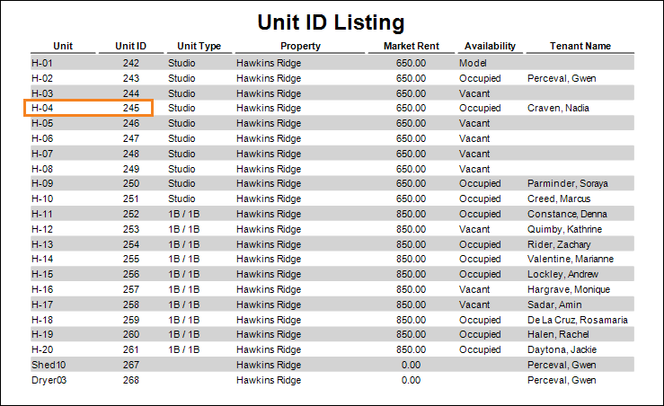
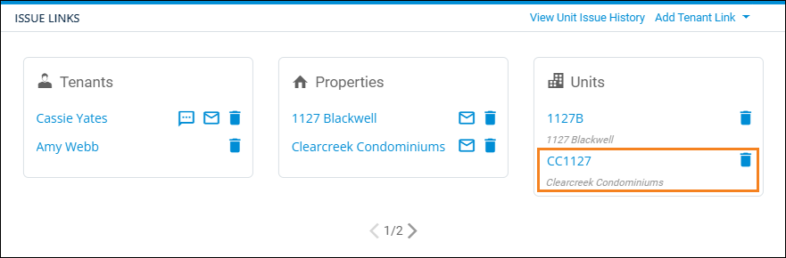

Source: https://rmxhelp.rentmanager.com/Topics/Express/KB/Script-Index-Unit.htm
Unit Indexing
In scripting, an index is how instances of an entity or other record are counted in a script. Indexing manages the one-to-many relationship that occurs between two classes.
When the Unit class is used as a child class in a script (e.g., Tenant.Unit.Function), an index can be specified to uniquely identify units that are associated with the preceding class. For example, tenants can be associated with multiple units, and indexing can be used to identify each of those units.
Unit Index Relationships
The Unit class may use an index parameter when it is preceded by certain classes. Each class is described below.
Property.Unit Indexing
Units associated with a property are indexed based upon when the unit was created. The first unit created for the property has an index of 0, and the second unit has an index of 1, and so on.
You can view a unit's index for a property by viewing the order in which the units display on the Unit ID Listing report based on the numbers in the Unit ID column. This report can be obtained by downloading it from the Online Template Library. For more information, refer to Online Template Library (Page).

[Property.Unit(3).UnitID]
Using the information in the above image, this returns 245, the Unit ID of the unit H-04, the fourth oldest unit at the property.
ServiceManager.Unit Indexing
Units associated with a service issue are indexed based on the order they are linked to the issue. The first unit linked on the issue has an index of 0, and the second unit has an index of 1, and so on.
You can view a unit's index on an issue by viewing the order in which the units display on the Issue Links tile.

[ServiceManager.Unit(1).Address.FullAddress]
Using the information in the above image, this returns the full address of unit CC1127 at Clearcreek Condominiums, the second unit linked to the service issue.
Tenant.Unit Indexing
Units associated with the tenant are indexed based upon the order in which the units appear on the Leases tile of the tenant details page. The topmost unit has an index of 0, and the second unit has an index of 1, and so on.
Warning
Units can be reordered on the Leases tile by clicking  and using
and using  to move units up and down the list. Reordering the list alters the output of existing scripts. New units are added to the bottom of the section.
to move units up and down the list. Reordering the list alters the output of existing scripts. New units are added to the bottom of the section.

[Tenant.Unit(1).Address.Street1]
Using the information in the above image, this returns the first line of the street address of unit SW003, the second-listed unit linked to the tenant.